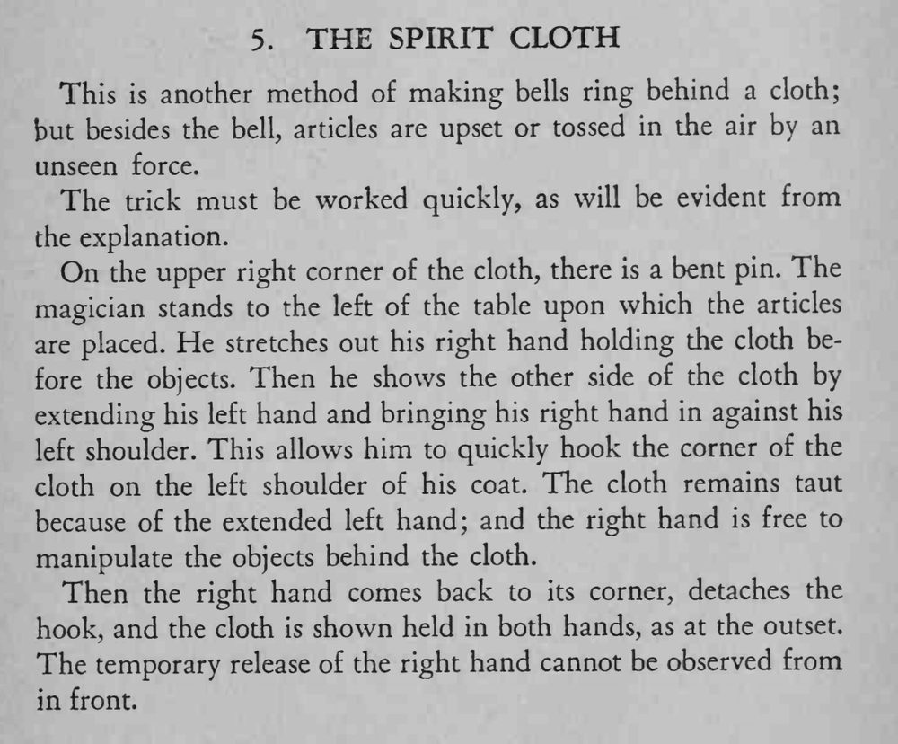

布后面铃铛自己响、桌上的小物件也像被无形的手掀翻抛起；魔术师自始至终只举着一块布。
挂针、取针要一气呵成，布要一直拉紧，动作一慢就会被看见。

This is another method of making bells ring behind a cloth; but besides the bell, articles are upset or tossed in the air by an unseen force. The trick must be worked quickly, as will be evident from the explanation. On the upper right corner of the cloth, there is a bent pin. The magician stands to the left of the table upon which the articles are placed. He stretches out his right hand holding the cloth before the objects. Then he shows the other side of the cloth by extending his left hand and bringing his right hand in against his left shoulder. This allows him to quickly hook the corner of the cloth on the left shoulder of his coat. The cloth remains taut because of the extended left hand; and the right hand is free to manipulate the objects behind the cloth. Then the right hand comes back to its corner, detaches the hook, and the cloth is shown held in both hands, as at the outset. The temporary release of the right hand cannot be observed from in front.